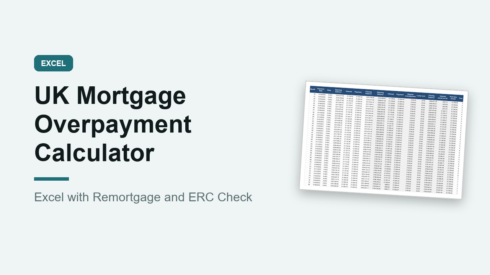

UK Mortgage Overpayment Calculator, Excel with Remortgage and ERC Check
GBP 7.00 · instant digital download

See exactly what overpaying your mortgage is worth: your new mortgage-free date, the time you save and the interest you save.
Made for UK mortgages, in pounds, with UK terms such as fixed rate deals, overpayment allowances, early repayment charges (ERC), remortgaging and loan to value.
What you get: one editable Excel workbook (.xlsx) with 8 sheets.
1.
Start here: plain instructions.
2.
Summary: payment now, mortgage-free date without and with overpayments, time saved, interest saved, and a balance chart.
3.
Mortgage Details: balance, rate, a different rate for after your deal ends, years left, repayment or interest only, deal dates, allowance and ERC.
4.
Overpayments: a regular monthly overpayment with start and end dates, plus up to 24 one-off lump sums.
5.
Schedule: month by month for up to 40 years, side by side without and with overpayments.
6.
Yearly: year end balances and interest paid each year.
7.
Allowance Check: what you overpay in each year of your deal against the allowance, with a warning and a possible ERC if you go over.
8.
Remortgage: balance and loan to value when your deal ends, and what you would need to pay off to reach each band.
A worked example is filled in, so you can see how it works before typing your own figures.
Figures are monthly estimates, and lenders usually charge interest daily.
Prints on A4.
Opens in Excel, Google Sheets and Numbers.
Digital download, nothing is posted.
A calculator for your own figures, not financial advice..
What happens after you buy
Payment and delivery are handled by Gumroad. You get the download straight after paying, and a copy of the link by email. Nothing is posted to you.
Tags: mortgage calculator, overpayment, uk mortgage, remortgage, excel template, mortgage free, loan to value, personal finance uk, homeowner, mortgage planner